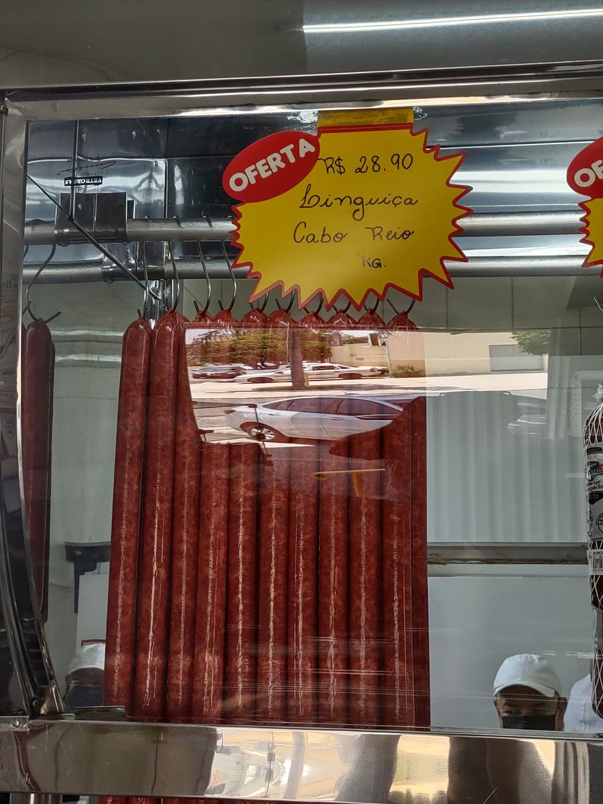

Açougue de tradição · Jardim Nova Europa
A carne da família há mais de 30 anos.
Tem cliente que compra aqui desde o tempo da avó. Cortes de qualidade, pacotes já fracionados e temperados para a mistura da semana, balcão limpinho e gente que indica o melhor jeito de preparar.
Seg a sáb 7h às 18h30 · dom 7h às 12h40

4,8215 avaliações
No balcão
Do churrasco à mistura da semana
Bovinos
Cortes para churrasco, panela e bife, com indicação de preparo.
Fracionados
Pacotes prontos, do tamanho certo para a semana.
Temperados
Opções já temperadas e de fácil preparo.
Linguiças
E outros itens de mercearia para completar a compra.
Calculadora
Quanto de carne para o churrasco?
Diga quantas pessoas e o apetite da turma. A lista sai pronta para ligar e encomendar.
A turma
Sua lista
- Carne bovina2,8 kg
- Linguiça1,1 kg
- Frango0,8 kg
- Total de carne4,7 kg
4,8 · 215 avaliações no Google
Referência na região
Compro carne aqui há mais de 30 anos. Todos muito educados e o serviço é impecável!Rita · Google
Açougue de tradição! Minha família já frequenta desde a minha avó. Opções já fracionadas, ótimas para a mistura da semana.Lucas · Google
Muitas opções de pacotes já temperados e de fácil preparo. Funcionários com boas indicações para preparos. Lugar com muita higiene.Jorge · Google
Onde fica
Rua Nicarágua, 307
| Segunda a sábado | 7h às 18h30 |
| Domingo | 7h às 12h40 |
R. Nicarágua, 307 · Jardim Nova Europa, Campinas (SP)
Telefone (19) 3278-3804
Domingo de manhã é o horário mais cheio.